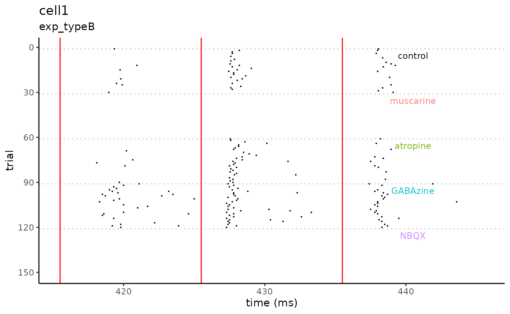

Example Workflow: Evoked Action Potentials
Source:vignettes/articles/workflow_evoked_ap.Rmd
workflow_evoked_ap.RmdPre-processing: Experiment Parameters
- For convenient batch processing, you can store experiment parameters
(e.g. sweep/trial number of a agonist) in a csv file. To generate a
blank template, use
create_parameter_template().
matools::create_parameter_template()Data Processing
- First, load the package and example data.
library(matools)
example_data <- system.file("extdata/demo_data",
package = "matools",
mustWork = TRUE
)
example_parameters <- system.file("extdata/demo_data",
"demo_data_project_parameters.csv",
package = "matools",
mustWork = TRUE
)- This package works best when parameters and variables are stored
within a common environment and easily referenced by sequential
functions. To generate a
matools_env, runset_pkg_environment(). To set parameter values run the following:
set_pkg_environment(force_new = TRUE)
set_data_directory(example_data)
import_experiment_parameters(example_parameters)
# check for missing .asc files or experiment parameters
import_check_missing_info(
dir_filenames = matools_env$files_in_folder,
parameters = matools_env$parameters,
skip_prompt = TRUE
)
#> matools_env$files_to_process created- Next, sequentially load each (.asc) file as a tibble; calculate
additional values; and aggregate each modified tibble into collection
called
data_collection.
for (filename in matools_env$files_to_process) {
message(paste("Processing File:", filename))
data <- asc_to_tibble(
file_path = file.path(matools_env$directory_data, paste(filename, ".ASC", sep = ""))
)
# set experiment parameters for a single file
set_experiment_parameters(parameters = matools_env$parameters, filename = filename)
# modify the data frame
calculate_stimulus_times(
stimulus_time_first = matools_env$stimulus_time_of_first,
stimulus_count = matools_env$stimulus_count,
stimulus_isi = matools_env$stimulus_isi
)
data <- add_sweep_number_to_rows(
df = data,
sweep_duration = matools_env$sweep_duration_sec,
sweep_count = matools_env$sweep_total,
time_ref = "rec_time_ms"
)
data <- insert_rows_for_missing_sweeps(
df = data,
sweep_count = matools_env$sweep_total
)
data <- standardize_event_time(
df = data,
sweep_duration = matools_env$sweep_duration_sec,
time_ref = "rec_time_ms"
)
data <- add_stimulus_index(
df = data,
time_of_stim = matools_env$time_of_stimuli,
isi = matools_env$stimulus_isi,
sweep_count = matools_env$sweep_total,
recovery_stim = matools_env$stimulus_time_of_recovery
)
data <- add_event_index(data)
data <- add_event_jitter(
df = data,
to_rise = FALSE
)
user_parameters <- tibble::tibble(
condition_start = matools_env$condition_starts,
condition_end = matools_env$condition_ends,
condition = matools_env$condition_names
)
data <- add_condition_tag(
df = data,
parameters = user_parameters
)
df_histo <-
create_histogram_df(
df = data,
time_of_stim = matools_env$time_of_stimuli,
condition_names = matools_env$condition_names,
bin_size = 1,
window_size = 50,
first_bin_on_stim = FALSE,
one_event_per_bin = FALSE
)
# aggregate data for plotting
if (!exists("data_collection")) {
data_collection <-
tibble::tibble(
cell_id = filename,
experiment_id = matools_env$experiment_id,
data_events = list(data),
data_histogram = list(df_histo)
)
} else {
data_collection <-
tibble::add_row(
data_collection,
cell_id = filename,
experiment_id = matools_env$experiment_id,
data_events = list(data),
data_histogram = list(df_histo)
)
}
}
#> Processing File: cell1
#> Processing File: cell2Data Plotting
- Now, let’s extract a single experiment from the aggregated data,
"cell1".
library(magrittr, include.only = "%>%")
plot_data <- data_collection %>%
dplyr::filter(experiment_id == "exp_typeB") %>%
dplyr::filter(cell_id == "cell1") %>%
dplyr::select("data_events") %>%
tidyr::unnest("data_events")- Finally, let’s plot the spike raster for the example cell.
plot_spike_raster(
df = plot_data,
filename = "cell1",
id = "exp_typeB",
time_of_stim = c(415.5, 425.5, 435.5),
condition_names = unique(na.omit(plot_data$condition))
)
Additional References
- This example was modified from
analysis_evoked_ap(), which is viewable within R and Rstudio viagetAnywhere(analysis_evoked_ap())and available on github at https://github.com/trfore/matools/blob/main/R/workflows.R